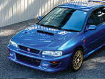

Subaru Impreza GC8 1998
La Subaru Impreza GC8 de 1998 est un modèle emblématique connu pour ses performances sportives et son style distinctif.
Dotée d'un moteur Boxer 4 cylindres de 2,0 litres, la GC8 offre une puissance impressionnante pour son époque, combinée à une traction intégrale symétrique caractéristique de Subaru.
Son design rallye-agressif est accompagné d'une suspension spécialement conçue pour les routes sinueuses, offrant une tenue de route exceptionnelle et une conduite sportive.
L'intérieur allie fonctionnalité et confort, avec des sièges sport, un volant ergonomique et des équipements de haute technologie pour une expérience de conduite immersive.
La Subaru Impreza GC8 1998 est appréciée des passionnés de rallye et des amateurs de voitures sportives pour sa polyvalence, sa fiabilité et ses performances sur route.
Spécificités techniques du véhicule
| Caractéristique | Valeur |
|---|---|
| Moteur | Boxer 4 cylindres 2,0 litres |
| Puissance | 215 chevaux |
| Couple | 290 Nm |
| Transmission | Boîte manuelle 5 vitesses |
| Accélération (0-100 km/h) | 6,2 secondes |
| Vitesse maximale | 240 km/h |
| Châssis | Monocoque renforcé |
| Suspension | Amortisseurs sport réglables |
| Freins | Disques ventilés, ABS |
| Pneus | Avant 205/55 R16, Arrière 205/55 R16 |
| Poids | 1250 kg |
| Consommation moyenne | 9 L/100km |